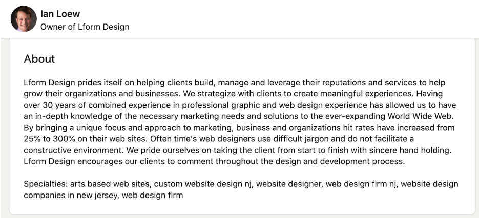
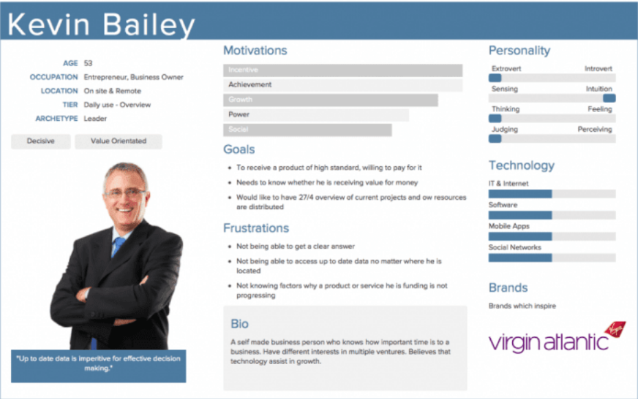
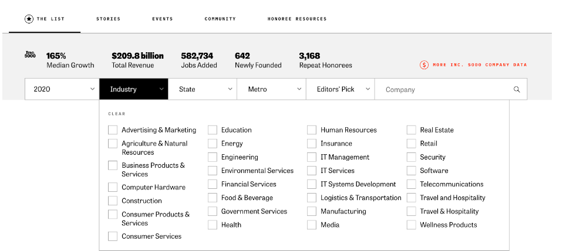
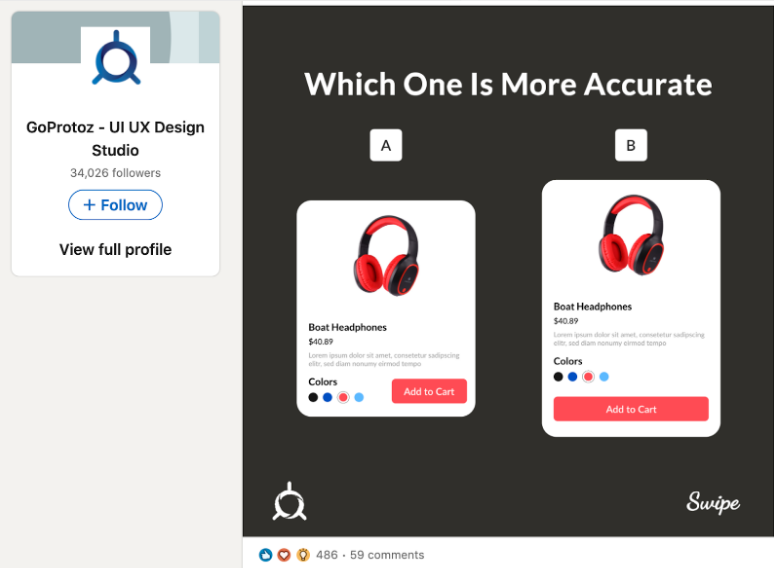
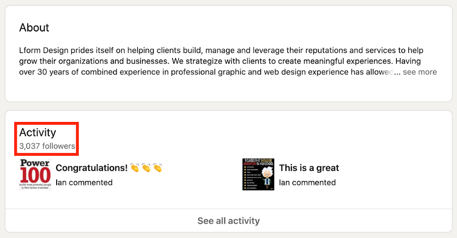
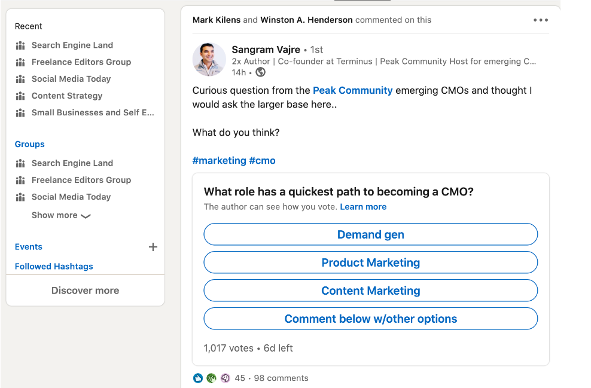
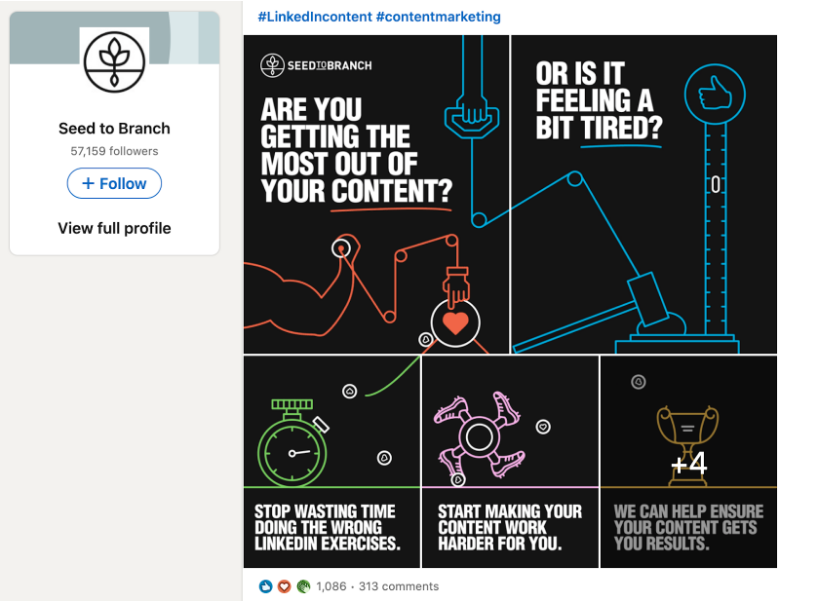

LinkedIn is the largest social media platform for business professionals. The site has 645 billion users from more than 200 countries. You can use LinkedIn to grow your professional network, find clients, new career paths, business opportunities, and more.
LinkedIn is the largest social media platform for business professionals. The site has 645 billion users from more than 200 countries. You can use LinkedIn to grow your professional network, find clients, new career paths, business opportunities, and more.
Despite these opportunities, many people struggle with LinkedIn networking. This guide will walk you through six effective LinkedIn networking strategies you can implement. Keep reading to know more about LinkedIn networking strategies.
1. Optimize & Promote Your Profile
The starting point for any LinkedIn networking campaign is your professional profile. Use a good headshot for your image. Spend a bit of time filling out your professional background. Then, add relevant information under your bio.

The image above is what you’d see if you searched for my profile on LinkedIn.
If you’re stuck for inspiration, look at the bio information for influencers in your niche. There’s a good chance they spent a lot of time creating their bio. They might have even hired a professional copywriter to write the description.
When your bio is ready, you should promote your profile to your existing network. There are a lot of ways you can cross-promote your LinkedIn account. You can promote your profile through your email list, on Twitter, or in your email signature, for example.
2. Practice smart and timely networking
Networking on LinkedIn isn’t a numbers game. You can have as many followers and contacts as you want, but if only a few of them add value to your business and customers, a large network won’t do much for you. The most successful LinkedIn networkers don’t focus on the number of their contacts but their quality and relevance.
The best way to ensure you are growing a network that aligns with your business goals is to define your target audience. You can either create various personas or list the type of people you want to have in your network.

Source: Business2Community
For example, the user persona above describes someone who has an entrepreneurial mindset, leads a business or team, and is willing to pay a premium for a product or service as long as they are confident that the output is of high quality.
As a business owner, your job is to align your LinkedIn networking strategy with the type of users you want to form connections with.
Let’s say you’re running a web design company that works with clients in the manufacturing and service technology sectors. Once you’ve defined the type of people you want to connect with, you need to create a database of people who fit that persona. You can use relevant resources to build out a database of companies. For example, you might use the Inc. 5,000 list to create a list of companies that fit your ideal customer persona.

Once you’ve created your list, you can then search for those companies on LinkedIn. You can then search for the person who makes purchasing decisions and send through a connection request.
However, sending a generic connection request won’t do the job. These users receive dozens of connection requests everyday – and don’t accept most of them. To get them to connect with you, there has to be a compelling reason for them to accept your request.
For instance, you can add a message to your connection request, listing what you do, the companies you’ve worked with, and why you’d like to connect with them. Most of the users you’d like to connect with will probably look through your profile, so it’s a good idea to include a few case studies or thought pieces to your timeline to convince them that you really mean business.
You also need to ensure that you’re getting in touch with the right people, especially if you’re trying to connect with a company. You can use a tool like Find Emails or Hunter to collect their contact information.
3. Engage with Your Network
LinkedIn is a social network. If you want to raise your profile, you should regularly engage with your network. There are two ways you can engage with people:
- Post interesting content on your timeline
- Engage with the content published by other people in your network
Naturally, you should do both of these things.
I recommend you spend a bit of time familiarizing yourself with the type of content that people find engaging in your niche. Try to identify trends. You’ll often find that some of the most engaging content asks open-ended questions.

The research isn’t essential, but it can help you create engaging content.
In addition to creating content, make sure to engage with content created by other people in your network. You can react to their posts or leave comments as you feel relevant.
4. Get Active in LinkedIn Groups
LinkedIn groups are a great way to connect with people. However, it is not a good place for outright advertising. If you post about your products every day, people will stop paying attention to your posts. It can even get you banned!
Instead of directly promoting your brand, you can establish yourself as a thought leader by posting informative content. Publishing authoritative content will help build your credibility in the group and drive more traffic to your site.
I’ve spent some time growing my authority on LinkedIn. You can see that it’s paid dividends, and I have over 3,000 followers, which means my content gets a large reach.

LinkedIn is one of the top channels for content distribution, at least for B2B lead generation. Blogging on the platform is a great way to grow your authority. Keep in mind, LinkedIn tries to keep people on the platform, so it won’t heavily promote content with external links.
5. Use the Right Hashtags
Hashtags on LinkedIn will help you promote your posts, boost your engagement rates, and help you reach your target audience. Most of the trending content on LinkedIn uses a couple of hashtags per post.
Here’s a nice example from a poll where the author used the hashtags #marketing and #CMO.

It’s relatively easy to get a piece of content trending for a hashtag on LinkedIn. A couple of reactions and posts is often all you need to start appearing in the search results for a hashtag. Once your content is trending, you’ll get a lot more eyeballs on the post.
6. Use Engaging Visuals in Your Content
Adding images will help to make your content more eye-catching and can significantly increase engagement. You can use various types of images for your posts. For example, you can create short videos, create slides, Gifs, or just a regular photo.
There are some fun ways you can utilize the LinkedIn User Interface (UI) to create engaging graphics. The example below is a series of animated Gifs.

The graphics are eye-catching and different. It stands out in your timeline. Here is a link to the post, just in case you want to check it out.
Bottomline
LinkedIn is first and foremost a social network for professionals, by professionals. You have to elevate your LinkedIn strategy if you want to get noticed and be taken seriously. In this guide, I looked at six LinkedIn networking strategies that you can use.
You should start by creating a professional LinkedIn bio. Cross-promote your LinkedIn profile across your various communication channels. Following on from this, you should strategically grow your network through targeted outreach. You then need to post engaging content and engage with your growing audience. By following the steps outlined above, you should start growing your LinkedIn network in no time.
Bio:
Ian Loew is a web entrepreneur and inbound marketing expert, and the Owner & Head of Business Development of Lform Design. After four years of helping Fortune 500 companies with MGT Design, Ian embarked on his freelance career before establishing Lform Design in 2005. He leads a team of creative professionals to deliver inspired online experiences via modern, responsive websites that reflect his clients’ core values. When not at the helm, Ian can be found mountain biking with friends or spending time with his family.
Leave a Reply